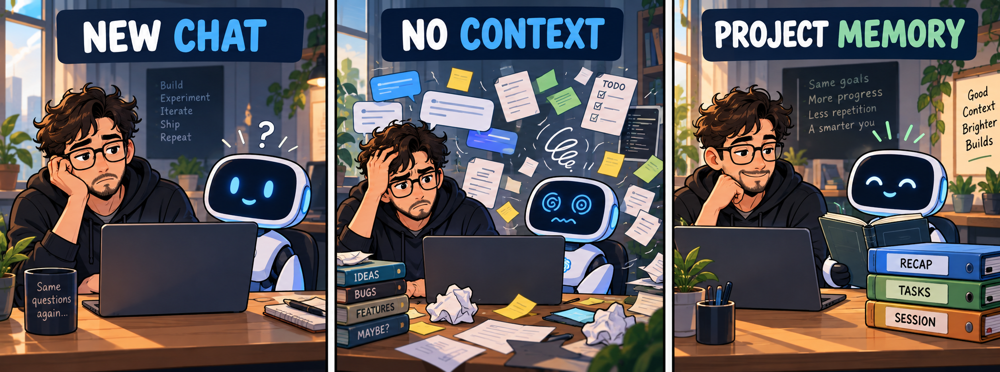
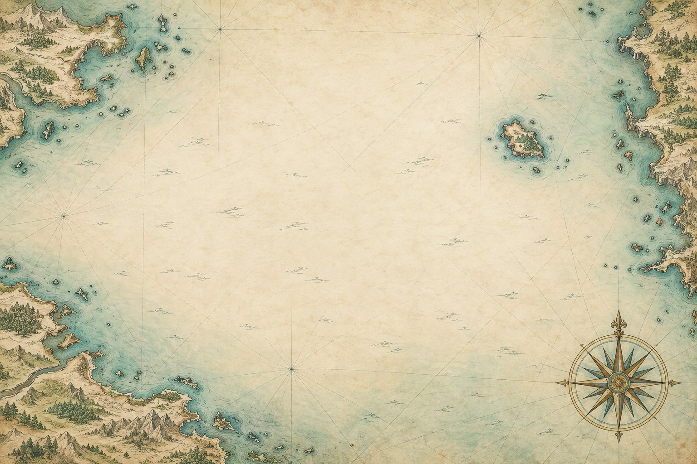

New session, same introduction.
You explain the repository, constraints, decisions, blockers, and next step again. The cost is not dramatic once. It becomes heavy because real work spans many sessions.
Not a company. A garage for ideas ready to step outside.
Workflow Management Skill
AI assistants are sharp, but a fresh conversation starts without yesterday's project memory. Workflow Management gives the next session a durable handoff: what changed, what matters, what is blocked, and where to continue.

Plain filesMarkdown and JSON in a context folder you control.
Portable workflowThe project memory belongs to the work, not one chat window.
Beta pathKiro adds an experimental team mode, still untested, while the stable package stays focused.
01 / The Problem
Chat history is not a project plan. It is too long, too hidden, and too fragile. Workflow Management turns the living state of the project into plain files the assistant can read on purpose.
You explain the repository, constraints, decisions, blockers, and next step again. The cost is not dramatic once. It becomes heavy because real work spans many sessions.
The useful ending of yesterday's work gets buried in a transcript instead of becoming today's starting point.
The assistant reads too much or too little because there is no compact, current source of truth.
Choices live in chat fragments instead of records you can inspect.
Open issues return as surprises instead of known project state.
The first half hour becomes archaeology.
02 / Two Editions
The stable edition supports Claude Code and Codex. The Kiro edition is a separate beta package with the same personal workflow plus an optional team layer.
Open-source package for durable personal project context: sessions, RECAP, tasks, focus notes, meetings, roadmaps, decisions, and sprints.
A Kiro-specific package with the personal workflow skill and an optional team skill for shared roadmap, tasks, and assignments.
It does not make the AI omniscient. It gives it a notebook, a map, and enough manners to read them before guessing.
Everything stays inspectable: Markdown records, JSON configuration, and normal project files under a context folder you control.

03 / Long Vision · Workflow Management
Weeks pass. Chats restart. Your project should still remember where it is going.
Keep the long-term goal and the milestones that lead there.
Carry decisions forward. Stop rediscovering yesterday.
Record blockers and changes before they become surprises.
Start each session knowing what matters now.
Check progress against the outcome you set out to reach.
04 / What It Keeps
RECAP.md
Open work, blockers, and next steps without re-reading everything.
sessions/
What happened today: decisions, progress, verification, and next actions.
tasks/
Goals, plans, progress, and done criteria.
focus/
Notes that should survive the conversation.
roadmap/
Phases, milestones, sequencing, and decisions.
meetings/
Owners, unresolved questions, and follow-ups from real conversations.
05 / What Comes Next
Workflow Management is the first layer: durable state. Two later experiments explore how an assistant can choose the right documents instead of swallowing the whole project.
kb-graph
A local-first knowledge graph over docs, decisions, tasks, and source references.
Focus
graph-guided-rag
A future RAG implementation where the graph narrows the search before semantic retrieval.
Later
kiro-beta
Colleagues try the personal skill and the experimental team mode; their feedback shapes the next version.
Now